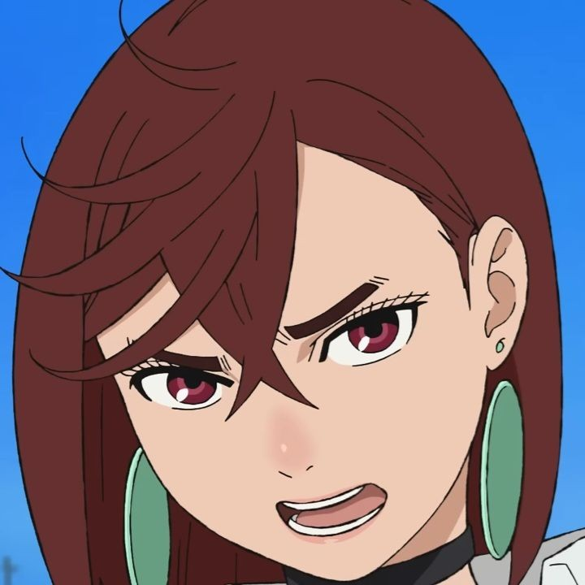
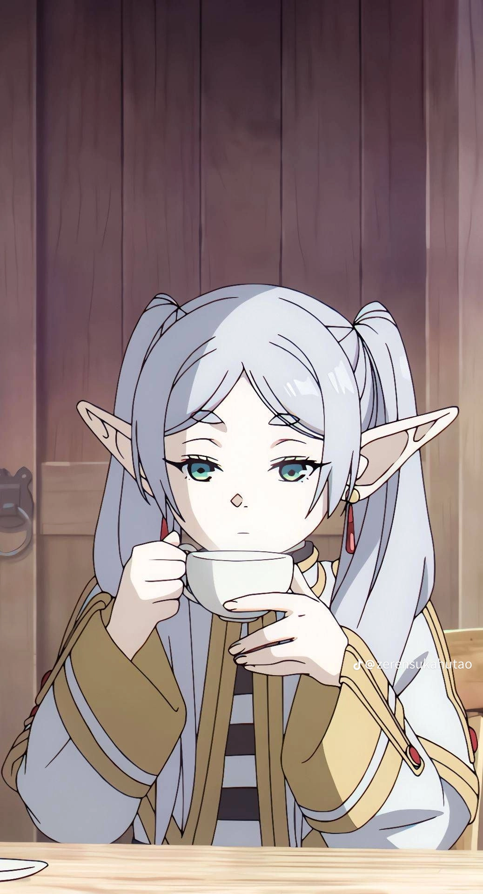

Amu
Amu biasanya digambarkan sebagai karakter yang ceria, penuh semangat, dan sedikit pemberontak. Dia berusaha menemukan jati dirinya sambil menghadapi berbagai tantangan emosional dan sosial. Meskipun tampak percaya diri, Amu sebenarnya memiliki sisi sensitif dan peduli, terutama terhadap teman-temannya. Kombinasi kepribadian yang kuat dan lembut ini membuatnya menjadi karakter yang mudah diingat dan disukai.

Ayase Momo
Ayase Momo dari Dandadan adalah karakter berani dan tegas yang menghadapi dunia paranormal penuh misteri. Dengan kekuatan spiritualnya, ia bertarung melawan makhluk gaib bersama temannya, Okarun, menunjukkan ketangguhan dan empati yang mendalam.

kugisaki Nobara
Kugisaki Nobara adalah karakter utama dalam Jujutsu Kaisen yang kuat dan percaya diri. Dia adalah penyihir jujutsu dari pedesaan Jepang yang menggunakan teknik unik dengan boneka dan paku. Nobara memiliki hubungan erat dengan teman-teman sekelasnya, Yuji Itadori dan Megumi Fushiguro, serta menunjukkan perkembangan yang signifikan dalam keterampilan dan kepribadiannya saat melawan kutukan.

Frieren
Rambut Putih dengan bola mata berwarna hijau melambangkan keindahan hakiki. Meski terlihat dingin, Frieren memiliki hati yang lembut dan perlahan belajar memahami hubungan dengan orang lain, terutama manusia yang usianya jauh lebih pendek darinya.